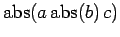
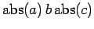
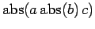
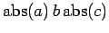

Natural Math supports a range of functions
sqrt a, abs a, |a|, a squared, a !, a factorial
and the trig and hyperbolic functions:
sin, cos, tan, sec, csc, cot, arcsin, arccos, arctan, sinh, cosh, tanh, coth
and functions that you can create yourself, either by using quotes, or by using the ``textsymb'' command:
"sech"(x) = textsym sech(x) = 2 over (e^x + e^-x)
Some of these functions interact with brackets in interesting ways:
sqrt(a+b) , sqrt((a+b)) , abs(a+b) , abs((a+b))
The absolute value construction is even more interesting, and
there is a potential for ambiguity: does  represent
, or
?
Natural Math will use the second interpretation, but this can be
changed using brackets:
represent
, or
?
Natural Math will use the second interpretation, but this can be
changed using brackets:
|x over y| 5 |x over y|, |(x over y| 5 |x over y)|
Finally, the trig functions can be raised to powers:
sin^2 x + cos^2 x = 1, sin^-1 (sqrt3 over 2) = pi over 3